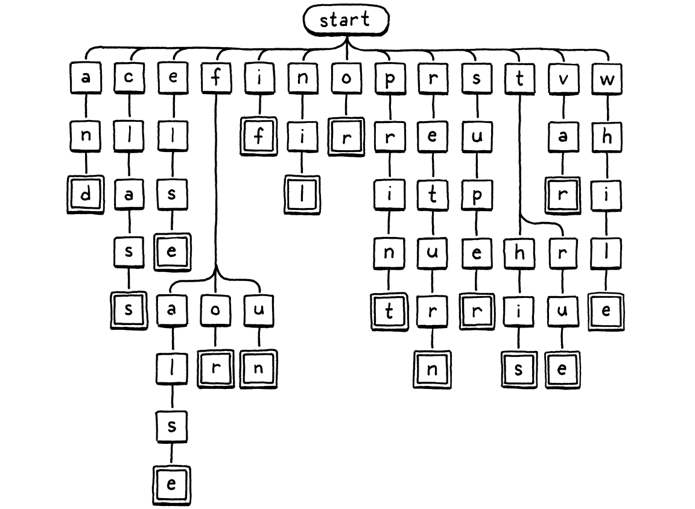
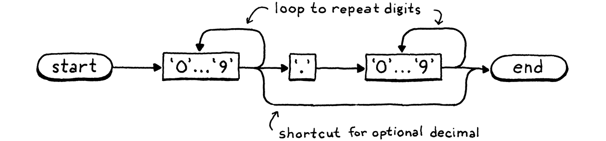

Scanning on Demand
This book is a work in progress!
×If you see a mistake, find something unclear, or have a suggestion, please let me know. To follow its progress, please join the mailing list:
(I post about once a month. Don’t worry, I won’t spam you.)
Literature is idiosyncratic arrangements in horizontal lines in only twenty-six phonetic symbols, ten Arabic numbers, and about eight punctuation marks.
Kurt Vonnegut, A Man Without a Country
Our second interpreter, clox, has three phases—scanner, compiler, and virtual machine. A data structure joins each pair of phases. Tokens flow from scanner to compiler, and chunks of bytecode from compiler to VM. We began our implementation near the end with chunks and the VM. Now, we’re going to hop back to the beginning and build a scanner that makes tokens. In the next chapter, we’ll tie the two ends together with our bytecode compiler.

I’ll admit, this is not the most exciting chapter in the book. With two implementations of the same language, there’s bound to be some redundancy. I did sneak in a few interesting differences compared to jlox’s scanner. Read on to see what they are.
16 . 1Spinning Up the Interpreter
Now that we’re building the front end, we can get clox running like a real
interpreter. No more hand-authored chunks of bytecode. It’s time for a REPL and
script loading. Tear out most of the code in main() and replace it with:
int main(int argc, const char* argv[]) {
initVM();
in main()
replace 26 lines
if (argc == 1) { repl(); } else if (argc == 2) { runFile(argv[1]); } else { fprintf(stderr, "Usage: clox [path]\n"); exit(64); } freeVM();
return 0; }
If you pass no arguments to the executable, you are dropped into the REPL. A single command line argument is understood to be the path to a script to run.
We’ll need a few system headers, so let’s get them all out of the way:
add to top of file
#include <stdio.h> #include <stdlib.h> #include <string.h>
#include "common.h"
And now to get the REPL up and REPL-ing:
#include "vm.h"
static void repl() { char line[1024]; for (;;) { printf("> "); if (!fgets(line, sizeof(line), stdin)) { printf("\n"); break; } interpret(line); } }
A quality REPL handles input that spans multiple lines gracefully and doesn’t have a hardcoded line length limit. This REPL here is a little more, ahem, austere, but it’s fine for our purposes.
The real work happens in interpret(). We’ll get to that soon, but first let’s
take care of loading scripts:
add after repl()
static void runFile(const char* path) { char* source = readFile(path); InterpretResult result = interpret(source); free(source); if (result == INTERPRET_COMPILE_ERROR) exit(65); if (result == INTERPRET_RUNTIME_ERROR) exit(70); }
We read the file and execute the resulting string of Lox source code. Then, based on the result of that, we set the exit code appropriately because we’re scrupulous tool builders and care about little details like that.
We also need to free the source code string because readFile() dynamically
allocates it and passes ownership to its caller. That function looks like this:
add after repl()
static char* readFile(const char* path) { FILE* file = fopen(path, "rb"); fseek(file, 0L, SEEK_END); size_t fileSize = ftell(file); rewind(file); char* buffer = (char*)malloc(fileSize + 1); size_t bytesRead = fread(buffer, sizeof(char), fileSize, file); buffer[bytesRead] = '\0'; fclose(file); return buffer; }
Like a lot of C code, it takes more effort than it seems like it should, especially for a language expressly designed for operating systems. The difficult part is that we want to allocate a big enough string to read the whole file, but we don’t know how big the file is until we’ve read it.
The code here is the classic trick to solve that. We open the file, but before
reading it, we seek to the very end using fseek(). Then we call ftell()
which tells us how many bytes we are from the start of the file. Since we seeked
(“sought”?) to the end, that’s the size. We rewind back to the beginning,
allocate a string of that size, and read the whole file
in a single batch.
So we’re done, right? Not quite. These function calls, like most calls in the C standard library, can fail. If this were Java, the failures would be thrown as exceptions and automatically unwind the stack so we wouldn’t really need to handle them. In C, if we don’t check for them, they silently get ignored.
This isn’t really a book on good C programming practice, but I hate to encourage bad style, so let’s go ahead and handle the errors. It’s good for us, like eating our vegetables or flossing.
Fortunately, we don’t need to do anything particularly clever if a failure occurs. If we can’t correctly read the user’s script, all we can really do is tell the user and exit the interpreter gracefully. First up, we might fail to open the file:
FILE* file = fopen(path, "rb");
in readFile()
if (file == NULL) { fprintf(stderr, "Could not open file \"%s\".\n", path); exit(74); }
fseek(file, 0L, SEEK_END);
This can happen if the file doesn’t exist or the user doesn’t have access to it. It’s pretty common—people mistype paths all the time.
This failure is much rarer:
char* buffer = (char*)malloc(fileSize + 1);
in readFile()
if (buffer == NULL) { fprintf(stderr, "Not enough memory to read \"%s\".\n", path); exit(74); }
size_t bytesRead = fread(buffer, sizeof(char), fileSize, file);
If you can’t even allocate enough memory to read the Lox script, you’ve probably got bigger problems to worry about, but we should do our best to at least let you know.
Finally, the read itself may fail:
size_t bytesRead = fread(buffer, sizeof(char), fileSize, file);
in readFile()
if (bytesRead < fileSize) { fprintf(stderr, "Could not read file \"%s\".\n", path); exit(74); }
buffer[bytesRead] = '\0';
This is also unlikely. Actually, the calls to
fseek(), ftell(), and rewind() could theoretically fail too, but let’s not
go too far off in the weeds, shall we?
16 . 1 . 1Opening the compilation pipeline
We’ve got ourselves a string of Lox source code, so now we’re ready to set up a
pipeline to scan, compile, and execute it. It’s driven by interpret(). Right
now, that function runs our old hard-coded test chunk. Let’s change it to
something closer to its final incarnation:
void freeVM();
function interpret()
replace 1 line
InterpretResult interpret(const char* source);
void push(Value value);
Where before we passed in a Chunk, now we pass in the string of source code. Here’s the new implementation:
function interpret()
replace 4 lines
InterpretResult interpret(const char* source) { compile(source); return INTERPRET_OK;
}
We don’t have the actual compiler yet in this chapter, but we can start laying out its structure. It lives in a new module:
#include "common.h"
#include "compiler.h"
#include "debug.h"
For now, the one function in it is declared like so:
create new file
#ifndef clox_compiler_h #define clox_compiler_h void compile(const char* source); #endif
That will change, but it gets us going:
create new file
#include <stdio.h> #include "common.h" #include "compiler.h" #include "scanner.h" void compile(const char* source) { initScanner(source); }
The first phase of compilation is scanning—the thing we’re doing in this chapter—so right now all the compiler does is set that up.
16 . 1 . 2The scanner scans
There’s still a few more feet of scaffolding to stand up before we can start writing useful code. First, a new header:
create new file
#ifndef clox_scanner_h #define clox_scanner_h void initScanner(const char* source); #endif
And its corresponding implementation:
create new file
#include <stdio.h> #include <string.h> #include "common.h" #include "scanner.h" typedef struct { const char* start; const char* current; int line; } Scanner; Scanner scanner;
Our scanner tracks where it is as it chews its way through the user’s source code. Like we did with the VM, we wrap that state in a struct and then create a single top-level module variable of that type so we don’t have to pass it around all of the various functions.
There are surprisingly few fields. The start pointer marks the beginning of
the current lexeme being scanned, and current points to the current character
being looked at.
We have a line field to track what line the current lexeme is on for error
reporting. That’s it! We don’t even keep a pointer to the beginning of the
source code string. The scanner works its way through the code once and is done
after that.
Since we have some state, we should initialize it:
add after variable Scanner
void initScanner(const char* source) { scanner.start = source; scanner.current = source; scanner.line = 1; }
We start at the very first character on the very first line, like a runner crouched and ready to run.
16 . 2A Token at a Time
In jlox, when the starting gun went off, the scanner raced ahead and eagerly scanned the whole program, returning a list of tokens. This would be a challenge in clox. We’d need some sort of growable array or list to store the tokens. We’d need to manage allocating and freeing the tokens and the collection itself. That’s a lot of code, and a lot of memory churn.
At any point in time, the compiler only needs one or two tokens—remember our grammar only requires a single token of lookahead—so we don’t need to keep them all around at the same time. Instead, the simplest solution is to not scan a token until the compiler needs one. When the scanner provides one, it returns the token by value. It doesn’t need to dynamically allocate anything—it can just pass tokens around on the C stack.
Unfortunately, we don’t have a compiler yet that can ask the scanner for tokens, so the scanner will just sit there doing nothing. To kick it into action, we’ll write some temporary code to drive it:
initScanner(source);
in compile()
int line = -1; for (;;) { Token token = scanToken(); if (token.line != line) { printf("%4d ", token.line); line = token.line; } else { printf(" | "); } printf("%2d '%.*s'\n", token.type, token.length, token.start); if (token.type == TOKEN_EOF) break; }
}
This loops indefinitely. Each turn through the loop, it scans one token and prints it. When it reaches a special “end of file” token, it stops. For example, if we run the interpreter on this program:
print 1 + 2;
It prints out:
1 31 'print' | 21 '1' | 7 '+' | 21 '2' | 8 ';' 2 39 ''
The first column is the line number, the second is the numeric value of the token type, and then finally the lexeme. That last empty lexeme on line 2 is the EOF token.
The goal for the rest of the chapter is to make that blob of code work. The key function is this one:
void initScanner(const char* source);
add after initScanner()
Token scanToken();
#endif
Each call to this scans and returns the next token in the source code. A token looks like:
#define clox_scanner_h
typedef struct { TokenType type; const char* start; int length; int line; } Token;
void initScanner(const char* source);
It’s pretty similar to jlox’s Token class. We have an enum identifying what type
of token it is—number, identifier, + operator, etc. The enum is virtually
identical to the one in jlox, so let’s just hammer out the whole thing:
#ifndef clox_scanner_h #define clox_scanner_h
typedef enum { // Single-character tokens. TOKEN_LEFT_PAREN, TOKEN_RIGHT_PAREN, TOKEN_LEFT_BRACE, TOKEN_RIGHT_BRACE, TOKEN_COMMA, TOKEN_DOT, TOKEN_MINUS, TOKEN_PLUS, TOKEN_SEMICOLON, TOKEN_SLASH, TOKEN_STAR, // One or two character tokens. TOKEN_BANG, TOKEN_BANG_EQUAL, TOKEN_EQUAL, TOKEN_EQUAL_EQUAL, TOKEN_GREATER, TOKEN_GREATER_EQUAL, TOKEN_LESS, TOKEN_LESS_EQUAL, // Literals. TOKEN_IDENTIFIER, TOKEN_STRING, TOKEN_NUMBER, // Keywords. TOKEN_AND, TOKEN_CLASS, TOKEN_ELSE, TOKEN_FALSE, TOKEN_FOR, TOKEN_FUN, TOKEN_IF, TOKEN_NIL, TOKEN_OR, TOKEN_PRINT, TOKEN_RETURN, TOKEN_SUPER, TOKEN_THIS, TOKEN_TRUE, TOKEN_VAR, TOKEN_WHILE, TOKEN_ERROR, TOKEN_EOF } TokenType;
typedef struct {
Aside from prefixing all the names with TOKEN_ (since C tosses enum names in
the top level namespace) the only difference is that extra TOKEN_ERROR type.
What’s that about?
There are only a couple of errors that get detected during scanning: unterminated strings and unrecognized characters. In jlox, the scanner reports those itself. In clox, the scanner produces a synthetic “error” token for that error and passes it over to the compiler. This way, the compiler knows an error occurred and can kick off error recovery before reporting it.
The novel part in clox’s Token type is how it represents the lexeme. In jlox, each Token stored the lexeme as its own separate little Java string. If we did that for clox, we’d have to figure out how to manage the memory for those strings. That’s especially hard since we pass tokens by value—multiple tokens could point to the same lexeme string. Ownership gets weird.
Instead, we use the original source string as our character store. We represent a lexeme by a pointer to its first character and the number of characters it contains. This means we don’t need to worry about managing memory for lexemes at all and we can freely copy tokens around. As long as the main source code string outlives all of the tokens, everything works fine.
16 . 2 . 1Scanning tokens
We’re ready to scan some tokens. We’ll work our way up to the complete implementation, starting with this:
add after initScanner()
Token scanToken() { scanner.start = scanner.current; if (isAtEnd()) return makeToken(TOKEN_EOF); return errorToken("Unexpected character."); }
Since each call to this scans a complete token, we know we are at the beginning
of a new token when we enter the function. Thus, we set scanner.start to point
to the current character so we remember where the lexeme we’re about to scan
starts.
Then we check to see if we’ve reached the end of the source code. If so, we return an EOF token and stop. This is a sentinel value that signals to the compiler to stop asking for more tokens.
If we aren’t at the end, we do some… stuff… to scan the next token. But we haven’t written that code yet. We’ll get to that soon. If that code doesn’t successfully scan and return a token, then we reach the end of the function. That must mean we’re at a character that the scanner can’t recognize, so we return an error token for that.
This function relies on a couple of helpers, most of which are familiar from jlox. First up:
add after initScanner()
static bool isAtEnd() { return *scanner.current == '\0'; }
We require the source string to be a good null-terminated C string. If the current character is the null byte, then we’ve reached the end.
To create a token, we have this constructor-like function:
add after isAtEnd()
static Token makeToken(TokenType type) { Token token; token.type = type; token.start = scanner.start; token.length = (int)(scanner.current - scanner.start); token.line = scanner.line; return token; }
It uses the scanner’s start and current pointers to capture the token’s
lexeme. It sets a couple of other obvious fields then returns the token. It has
a sister function for returning error tokens:
add after makeToken()
static Token errorToken(const char* message) { Token token; token.type = TOKEN_ERROR; token.start = message; token.length = (int)strlen(message); token.line = scanner.line; return token; }
The only difference is that the “lexeme” points to the error message string instead of pointing into the user’s source code. Again, we need to ensure that the error message sticks around long enough for the compiler to read it. In practice, we only ever call this function with C string literals. Those are constant and eternal, so we’re fine.
What we have now is basically a working scanner for a language with an empty lexical grammar. Since the grammar has no productions, every character is an error. That’s not exactly a fun language to program in, so let’s fill in the rules.
16 . 3A Lexical Grammar for Lox
The simplest tokens are only a single character. We recognize those like so:
if (isAtEnd()) return makeToken(TOKEN_EOF);
in scanToken()
char c = advance(); switch (c) { case '(': return makeToken(TOKEN_LEFT_PAREN); case ')': return makeToken(TOKEN_RIGHT_PAREN); case '{': return makeToken(TOKEN_LEFT_BRACE); case '}': return makeToken(TOKEN_RIGHT_BRACE); case ';': return makeToken(TOKEN_SEMICOLON); case ',': return makeToken(TOKEN_COMMA); case '.': return makeToken(TOKEN_DOT); case '-': return makeToken(TOKEN_MINUS); case '+': return makeToken(TOKEN_PLUS); case '/': return makeToken(TOKEN_SLASH); case '*': return makeToken(TOKEN_STAR); }
return errorToken("Unexpected character.");
We read the next character from the source code, and then do a straightforward switch to see if it matches any of Lox’s one-character lexemes. To read the next character, we use this helper which consumes the current character and returns it:
add after isAtEnd()
static char advance() { scanner.current++; return scanner.current[-1]; }
Next up are the two-character punctuation tokens like != and >=. Each of
these also has a corresponding single-character token. That means that when we
see a character like !, we don’t know if we’re in a ! token or a != until
we look at the next character too. We handle those like so:
case '*': return makeToken(TOKEN_STAR);
in scanToken()
case '!':
return makeToken(match('=') ? TOKEN_BANG_EQUAL : TOKEN_BANG);
case '=':
return makeToken(match('=') ? TOKEN_EQUAL_EQUAL : TOKEN_EQUAL);
case '<':
return makeToken(match('=') ? TOKEN_LESS_EQUAL : TOKEN_LESS);
case '>':
return makeToken(match('=') ?
TOKEN_GREATER_EQUAL : TOKEN_GREATER);
}
After consuming the first character, we look for an =. If found, we consume it
and return the corresponding two-character token. Otherwise, we leave the
current character alone (so it can be part of the next token) and return the
appropriate one-character token.
That logic for conditionally consuming the second character lives here:
add after advance()
static bool match(char expected) { if (isAtEnd()) return false; if (*scanner.current != expected) return false; scanner.current++; return true; }
If the current character is the desired one, we advance and return true.
Otherwise, we return false to indicate it wasn’t matched.
Now, we can handle all of the punctuation-like tokens. Before we get to the longer ones, let’s take a little side trip to handle characters that aren’t part of a token at all.
16 . 3 . 1Whitespace
Our scanner needs to handle spaces, tabs, and newlines, but those characters
don’t become part of any token’s lexeme. We could check for those inside the
main character switch in scanToken() but it gets a little tricky to ensure
that the function still correctly finds the next token after the whitespace
when you call it. We’d have to wrap the whole body of the function in a loop or
something.
Instead, before starting the token, we shunt off to a separate function:
Token scanToken() {
in scanToken()
skipWhitespace();
scanner.start = scanner.current;
This advances the scanner past any leading whitespace. After this call returns, we know the very next character is a meaningful one (or we’re at the end of the source code).
add after errorToken()
static void skipWhitespace() { for (;;) { char c = peek(); switch (c) { case ' ': case '\r': case '\t': advance(); break; default: return; } } }
It’s sort of a separate mini-scanner. It loops, consuming every whitespace character it encounters. We need to be careful that it does not consume any non-whitespace characters. To support that, we use:
add after advance()
static char peek() { return *scanner.current; }
This simply returns the current character, but doesn’t consume it. The previous code handles all the whitespace characters except for newlines:
break;
in skipWhitespace()
case '\n':
scanner.line++;
advance();
break;
default:
When we consume one of those, we also bump the current line number.
16 . 3 . 2Comments
Comments aren’t technically “whitespace”, if you want to get all precise with your terminology, but as far as Lox is concerned, they may as well be, so we skip those too:
break;
in skipWhitespace()
case '/':
if (peekNext() == '/') {
// A comment goes until the end of the line.
while (peek() != '\n' && !isAtEnd()) advance();
} else {
return;
}
break;
default:
Comments start with // in Lox, so as with != and friends, we need a second
character of lookahead. However, with !=, we still wanted to consume the !
even if the = wasn’t found. Comments are different, if we don’t find a second
/, then skipWhitespace() needs to not consume the first slash either.
To handle that, we add:
add after peek()
static char peekNext() { if (isAtEnd()) return '\0'; return scanner.current[1]; }
This is like peek() but for one character past the current one. If the current
character and the next one are both /, we consume them and then any other
characters until the next newline or the end of the source code.
We use peek() to check for the newline but not consume it. That way, the
newline will be the current character on the next turn of the outer loop in
skipWhitespace() and we’ll recognize it and increment scanner.line.
16 . 3 . 3Literal tokens
Number and string tokens are special because they have a runtime value associated with them. We’ll start with strings because they are easy to recognize—they always begin with a double quote:
TOKEN_GREATER_EQUAL : TOKEN_GREATER);
in scanToken()
case '"': return string();
}
That calls:
add after skipWhitespace()
static Token string() { while (peek() != '"' && !isAtEnd()) { if (peek() == '\n') scanner.line++; advance(); } if (isAtEnd()) return errorToken("Unterminated string."); // The closing quote. advance(); return makeToken(TOKEN_STRING); }
Similar to jlox, we consume characters until we reach the closing quote. We also track newlines inside the string literal. (Lox supports multi-line strings.) And, as ever, we gracefully handle running out of source code before we find the end quote.
The main change here in clox is something that’s not present. Again, it relates to memory management. In jlox, the Token class had a field of type Object to store the runtime value converted from the literal token’s lexeme.
Supporting that in C requires a lot of work. We need some sort of union and type tag to tell whether the token contains a string or double value. If it’s a string, we need to manage the memory for the string’s character array somehow.
Instead of adding that complexity to the scanner, we defer converting the literal lexeme to a runtime value until later. In clox, tokens only store the lexeme—the character sequence exactly as it appears in the user’s source code. Later in the compiler, we’ll convert that lexeme to a runtime value right when we are ready to store it in the chunk’s constant table.
Next up, numbers. Instead of adding a switch case for each of the ten digits that can start a number, we handle them here:
char c = advance();
in scanToken()
if (isDigit(c)) return number();
switch (c) {
That uses this obvious utility function:
add after initScanner()
static bool isDigit(char c) { return c >= '0' && c <= '9'; }
We finish scanning the number using this:
add after skipWhitespace()
static Token number() { while (isDigit(peek())) advance(); // Look for a fractional part. if (peek() == '.' && isDigit(peekNext())) { // Consume the ".". advance(); while (isDigit(peek())) advance(); } return makeToken(TOKEN_NUMBER); }
It’s virtually identical to jlox’s version except, again, we don’t convert the lexeme to a double yet.
16 . 4Identifiers and Keywords
The last batch of tokens are identifiers, both user-defined and reserved. This section should be fun—the way we recognize keywords in clox is quite different from how we did it in jlox, and touches on some important data structures.
First, though, we have to scan the lexeme. Names start with a letter:
char c = advance();
in scanToken()
if (isAlpha(c)) return identifier();
if (isDigit(c)) return number();
Which can be any of:
add after initScanner()
static bool isAlpha(char c) { return (c >= 'a' && c <= 'z') || (c >= 'A' && c <= 'Z') || c == '_'; }
Once we’ve found an identifier, we scan the rest of it using:
add after skipWhitespace()
static Token identifier() { while (isAlpha(peek()) || isDigit(peek())) advance(); return makeToken(identifierType()); }
After the first letter, we allow digits too, and we keep consuming alphanumerics until we run out of them. Then we produce a token with the proper type. Determining that “proper” type is where the excitement happens:
add after skipWhitespace()
static TokenType identifierType() { return TOKEN_IDENTIFIER; }
Okay, I guess that’s not quite exciting yet. That’s what it looks like if we have no reserved words at all. How should we go about recognizing keywords? In jlox, we stuffed them all in a Java Map and looked them up by name. We don’t have any sort of hash table structure in clox, at least not yet.
A hash table would be overkill anyway. To look up a string in a hash table, we need to walk the string to calculate its hash code, find the corresponding bucket in the hash table, and then do a character-by-character equality comparison on any string it happens to find there.
Let’s say we’ve scanned the identifier “gorgonzola”. How much work should we need to do to tell if that’s a reserved word? Well, no Lox keyword starts with “g”, so looking at the first character is enough to definitively answer “no”. That’s a lot simpler than a hash table lookup.
What about “cardigan”? We do have a keyword in Lox that starts with “c”: “class”. But the second character in “cardigan”, “a”, rules that out. What about “forest”? Since “for” is a keyword, we have to go farther in the string before we can establish that we don’t have a reserved word. But, in most cases, only a character or two is enough to tell we’ve got a user-defined name in our hands. We should be able to recognize that and fail fast.
Here’s a visual representation of that branching character-inspection logic:

We start at the root node. If there is a child node whose letter matches the first character in the lexeme, we move to that node. Then repeat for the next letter in the lexeme and so on. If at any point the next letter in the lexeme doesn’t match a child node, then the identifier must not be a keyword and we stop. If we reach a double-lined box, and we’re at the last character of the lexeme, then we found a keyword.
This tree diagram is an example of a thing called a trie. A trie stores a set of strings. Most other data structures for storing strings contain the raw character arrays and then wrap them inside some larger construct that helps you search faster. A trie is different. Nowhere in the trie will you find a whole string.
Instead, each string the trie “contains” is represented as a path through the tree of character nodes, as in our traversal above. Nodes that match the last character in a string have a special marker—the double lined boxes in the illustration. That way, if your trie contains, say, “banquet” and “ban”, you are able to tell that it does not contain “banque”—the “e” node won’t have that marker, while the “n” and “t” nodes will.
Tries are a special case of an even more fundamental data structure: a deterministic finite automaton (DFA). You might also know these by other names: “finite state machine”, or just “state machine”. State machines are rad. They end up useful in everything from game programming to implementing networking protocols.
In a DFA, you have a set of states with transitions between them, forming a graph. At any point in time, the machine is “in” exactly one state. It gets to other states by following transitions. When you use a DFA for lexical analysis, each transition is a character that gets matched from the string. Each state respresents a set of allowed characters.
Our keyword tree is exactly a DFA that recognizes Lox keywords. But DFAs are more powerful than simple trees because they can be arbitrary graphs. Transitions can form cycles between states. That lets you recognize arbitrarily long strings. For example, here’s a DFA that recognizes number literals:

I’ve collapsed the nodes for the ten digits together to keep it more readable, but the basic process works the same—you work through the path, entering nodes whenever you consume a corresponding character in the lexeme. If we were so inclined, we could construct one big giant DFA that does all of the lexical analysis for Lox, a single state machine that recognizes and spits out all of the tokens we need.
However, crafting that mega-DFA by hand would be challenging. That’s why Lex was created. You give it a simple textual description of your lexical grammar—a bunch of regular expressions—and it automatically generates a DFA for you and produces a pile of C code that implements it.
We won’t go down that road. We already have a perfectly serviceable hand-rolled scanner. We just need a tiny trie for recognizing keywords. How should we map that to code?
The absolute simplest solution is to use a switch statement for each node with cases for each branch. We’ll start with the root node and handle the easy keywords:
{
in identifierType()
switch (scanner.start[0]) { case 'a': return checkKeyword(1, 2, "nd", TOKEN_AND); case 'c': return checkKeyword(1, 4, "lass", TOKEN_CLASS); case 'e': return checkKeyword(1, 3, "lse", TOKEN_ELSE); case 'i': return checkKeyword(1, 1, "f", TOKEN_IF); case 'n': return checkKeyword(1, 2, "il", TOKEN_NIL); case 'o': return checkKeyword(1, 1, "r", TOKEN_OR); case 'p': return checkKeyword(1, 4, "rint", TOKEN_PRINT); case 'r': return checkKeyword(1, 5, "eturn", TOKEN_RETURN); case 's': return checkKeyword(1, 4, "uper", TOKEN_SUPER); case 'v': return checkKeyword(1, 2, "ar", TOKEN_VAR); case 'w': return checkKeyword(1, 4, "hile", TOKEN_WHILE); }
return TOKEN_IDENTIFIER;
These are the letters that correspond to a single keyword. If we see an “s”, the
only keyword the identifier could possibly be is super. It might not be,
though, so we still need to check the rest of the letters too. In the tree
diagram, this is basically that straight path hanging off the “s”.
We won’t roll a switch for each of those nodes. Instead, we have a utility function that tests the rest of a potential keyword’s lexeme:
add after skipWhitespace()
static TokenType checkKeyword(int start, int length, const char* rest, TokenType type) { if (scanner.current - scanner.start == start + length && memcmp(scanner.start + start, rest, length) == 0) { return type; } return TOKEN_IDENTIFIER; }
We use this for all of the unbranching paths in the tree. Once we’ve found a prefix that could only be one possible reserved word, we need to verify two things. The lexeme must be exactly as long as the keyword. If the first letter is “s”, the lexeme could still be “sup” or “superb”. And the remaining characters must match exactly—“supar” isn’t good enough.
If we do have the right number of characters, and they’re the ones we want, then it’s a keyword, and we return the associated token type. Otherwise, it must be a regular identifier.
We have a couple of keywords where the tree branches again after the first
letter. If the lexeme starts with “f”, it could be false, for, or fun. So
we add another switch for the branches coming off the “f” node:
case 'e': return checkKeyword(1, 3, "lse", TOKEN_ELSE);
in identifierType()
case 'f':
if (scanner.current - scanner.start > 1) {
switch (scanner.start[1]) {
case 'a': return checkKeyword(2, 3, "lse", TOKEN_FALSE);
case 'o': return checkKeyword(2, 1, "r", TOKEN_FOR);
case 'u': return checkKeyword(2, 1, "n", TOKEN_FUN);
}
}
break;
case 'i': return checkKeyword(1, 1, "f", TOKEN_IF);
Before we switch, we need to check that there even is a second letter. “f” by itself is a valid identifier too, after all. The other letter that branches is “t”:
case 's': return checkKeyword(1, 4, "uper", TOKEN_SUPER);
in identifierType()
case 't':
if (scanner.current - scanner.start > 1) {
switch (scanner.start[1]) {
case 'h': return checkKeyword(2, 2, "is", TOKEN_THIS);
case 'r': return checkKeyword(2, 2, "ue", TOKEN_TRUE);
}
}
break;
case 'v': return checkKeyword(1, 2, "ar", TOKEN_VAR);
That’s it. A couple of nested switch statements. Not only is this code short, but it’s very very fast. It does the minimum amount of work required to detect a keyword, and bails out as soon as it can tell the identifier will not be a reserved one.
And with that, our scanner is complete.
Challenges
-
Many newer languages support string interpolation. Inside a string literal, you have some sort of special delimiters—most commonly
${at the beginning and}at the end. Between those delimiters, any expression can appear. When the string literal is executed, the inner expression is evaluated, converted to a string, and then merged with the surrounding string literal.For example, if Lox supported string interpolation, then this:
var drink = "Tea"; var steep = 4; var cool = 2; print "${drink} will be ready in ${steep + cool} minutes.";
Would print:
Tea will be ready in 6 minutes.
What token types would you define to implement a scanner for string interpolation? What sequence of tokens would you emit for the above string literal?
What tokens would you emit for:
"Nested ${"interpolation?! Are you ${"mad?!"}"}"Consider looking at other language implementations that support interpolation to see how they handle it.
-
Several languages use angle brackets for generics and also have a
>>right shift operator. This led to a classic problem in early versions of C++:vector<vector<string>> nestedVectors;
This would produce a compile error because the
>>was lexed to a single right shift token, not two>tokens. Users were forced to avoid this by putting a space between the closing angle brackets.Later versions of C++ are smarter and can handle the above code. Java and C# never had the problem. How do those languages specify and implement this?
-
Many languages, especially later in their evolution, define “contextual keywords”. These are identifiers that act like reserved words in some contexts but can be normal user-defined identifiers in others.
For example,
awaitis a keyword inside anasyncmethod in C#, but in other methods, you can useawaitas your own identifier.Name a few contextual keywords from other languages, and the context where they are meaningful. What are the pros and cons of having contextual keywords? How would you implement them in your language’s front end if you needed to?